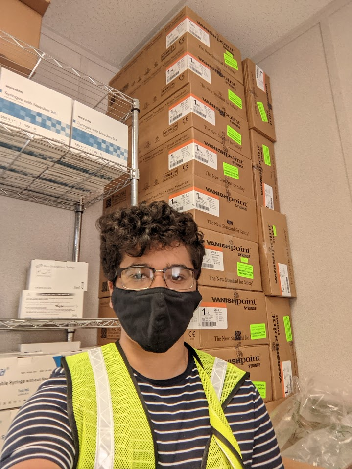
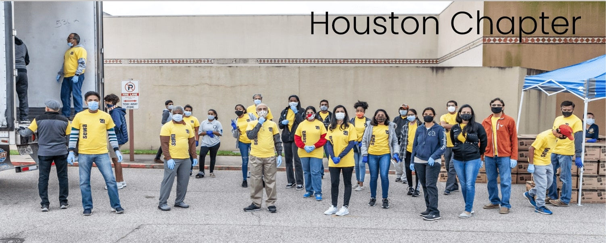
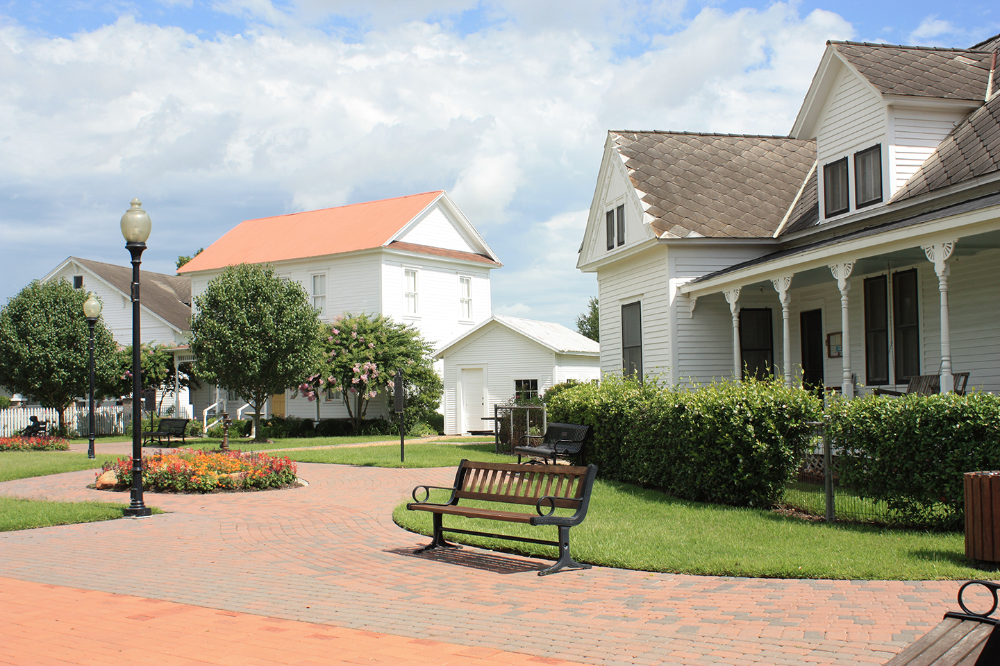

Big Event
I volunteered with my Club The Hindu Society of A&M in Big Event 2022. This is a yearly event where TAMU students collectively do community service around the Bryan and College Station area. I personally did some yardwork for a sweet old couple!


Houston Vaccine Mega-Site
I volunteered for two weeks at Houstons's Vaccine Mega-Site, where I worked with my team to ensure seamless registration for those who need assistance with technology. Additionally, I also managed inventory and helped with resource management.
SEWA USA

SEWA (Hindi for Service) is a non-profit organization that holds various food and other charitable drives throughout the United States to help the unfortunate. I participated in various of these, where I helped package, transport, and hand out items of all sorts.

Katy Heritage Homes
I volunteered at the Katy Heritage Homes museum to help preserve the rich culture and heritage of Katy. Here I gave tours to hundreds of visitors, managed inventory, pertook maintenance checks and helped keep the museums clean.